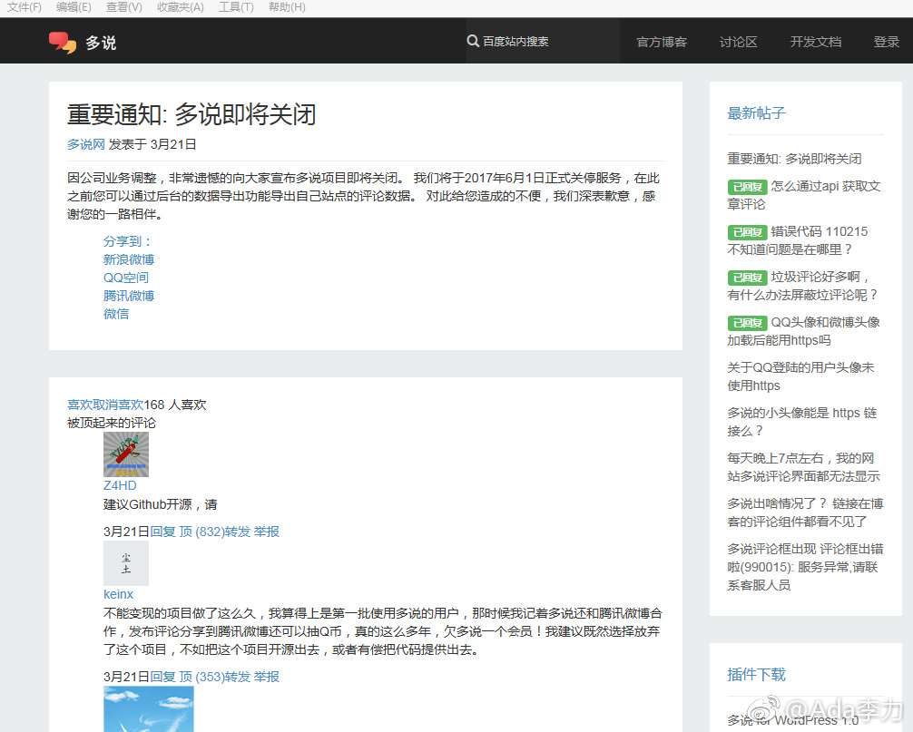

个人博客站点一年多没打理, 不知道挂了多久. 今天登上去做了些清理工作.
访问极其缓慢, 发现还是Google字体库的缘故, 之前360提供的代理服务失效了. 还是从CSDN博客上找到解决办法, wordpress管理后台下载个"Disable Google Fonts"插件, 访问立刻快很多.
之前在博客右侧设置的微博小工具也失效了, 重新取了段博客秀的代码, 显示OK.
通过多说评论框来了很多垃圾评论, 不知道怎么绕过审核的, 想着去关掉这个功能, 却发现多说官方宣布2017年6月30日正式停止服务. 叹息.
没有人打理的站点就跟网络上墓碑一样, 既然设置了, 就得花些精力和时间. 给自己提个醒.
访问极其缓慢, 发现还是Google字体库的缘故, 之前360提供的代理服务失效了. 还是从CSDN博客上找到解决办法, wordpress管理后台下载个"Disable Google Fonts"插件, 访问立刻快很多.
之前在博客右侧设置的微博小工具也失效了, 重新取了段博客秀的代码, 显示OK.
通过多说评论框来了很多垃圾评论, 不知道怎么绕过审核的, 想着去关掉这个功能, 却发现多说官方宣布2017年6月30日正式停止服务. 叹息.
没有人打理的站点就跟网络上墓碑一样, 既然设置了, 就得花些精力和时间. 给自己提个醒.
- 